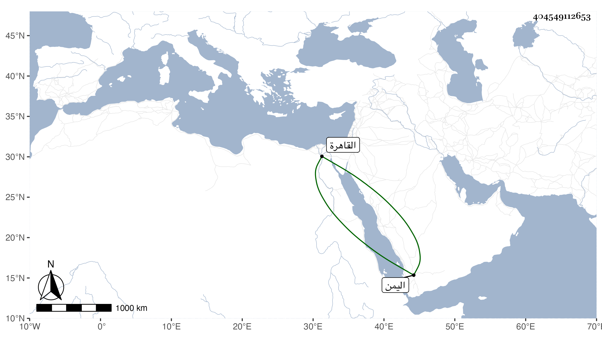

0902Sakhawi.DawLamic.ITO20230111-ara1.EIS1600.404549112653
Biography ID: 404549112653
ابن وفا أحمد ثم علي ابنا محمد بن محمد بن وفا فلاولهما أبو الفضل عبد الرحمن محمد وأبو الفتح محمد أبو المكارم إبرهيم وأبو الفتح محمد وأبو الجود حسن وأبو السيادات يحيى وأبو الطاهر ويحرر أمره ثم ان لأولهم الشمس أبو المراحم محمد ولأبي المراحم المحب أبو الفضل محمد وللمحب أبو المكارم إبرهيم وهو الآن بقية البيت ولعلي ثاني الأصلين المحمدون أبو الطاهر ولد بالقاهرة وأخذ عن أبيه وتكلم بعد وفاته ثم ارتحل إلى اليمن وانقطع خبره وأبو الطيب ولد أيضا بالقاهرة وتوفي بعد أبيه بثلاثة أيام سنة سبع أبو القسم أخذ عن أبيه وتكلم في درب الحريري بالبندقانيين ومات سنة ثلاث وثلاثين عن خمس وأربعين وكان ذا أحوال صالحة ولهم أخ رابع هو أبو العباس أحمد مات سنة خمس أو ست وعشرين عن ست وثلاثين ولهم أخت اسمها حسناء عمرت ثم انه لأول المحمدين الثلاثة أبو الفضل محمد .
